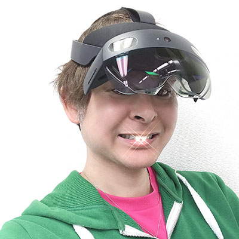
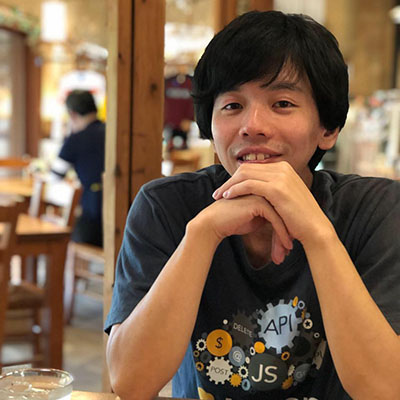

コミュニティオーガナイズドセッション
HoloLens Meetup
講演情報
| 資料公開予定 | 公開予定 |
|---|---|
| スクリーンショット撮影可否 | 可 |
| SNS投稿可否 | 可 |
コミュニティ概要
日本最大（つまり世界最大）のHoloLens/MixedRealityコミュニティです。色んな人が色んな興味を持って色んなことを試してそれを発表したりしながら楽しくやってます。
講演概要
xR Developerなら知っておきたいカメラの基礎知識
xR Develperに大切なことはUnityやUnrealができることやプログラミングができることなど色々あると思いますが、特にARやMRではカメラがわかることも大切です。 このセッションではRealとVirtual、そして複数のデバイスの映像が綺麗に重なって見えるためのカメラパラメータの基礎の基礎を扱います。
前本 知志
HoloLens 2 アプリの CI/CD 環境
実際の HoloLens 2 アプリ開発で使っている CI/CD フローとその構築について解説します。
酒井 辰也
誰でも作成・共有できるARナビゲーション
近年、大型ショッピングモールや病院、駅構内など建物の構造が複雑化しており、利用者に応じてわかりやすい案内表示が必要になっています。また、新しい生活様式では、非接触・非対面のナビゲーションが求められます。今回、誰でもARナビゲーションを作成・共有できるアプリを開発しました。施設案内はもちろん、オフィス見学ツアー、避難計画、ロボットのオペレーションなど様々な用途に応用可能です。
藤本賢志（ガチ本）
講演者詳細
-
金融系SEとして長らく従事していたが、ある年、ある出会いを境にxRに没頭。今は新規事業企画職として自社を世界一のxRインテグレータとして成長させるために奔走中。
-

HoloLens, KINECTが大好き。 Microsoft MVP, 一般社団法人 TMCN(Tokyo MotionControl Network) Co-Founder, 株式会社ホロラボ Co-founder
-
2017年より、HoloLens アプリ開発者として界隈に入り込む。2019年より、株式会社ホロラボに入社し、mixpace 開発チームのスクラムマスター 兼 HoloLens 2 アプリ開発をやっています。
-

2016年に熊本拠点が設立され、R&D戦略チームとしてクラウドと連携したAI／機械学習サービスやXRのアプリケーション開発を担う。また、熊本の技術コミュニティ「KumaMCN」の共同創設者のひとりで、年に30件ほどイベントを企画運営している。